My Educational Background
I started my schooling at Hilburn International School, Avissawella. This was the place where I learnt the
English alphabet for the first time, the place where I learnt on what is good and what is bad,
the place where I first new a person named a teacher, this was my start of a entire life time journey.
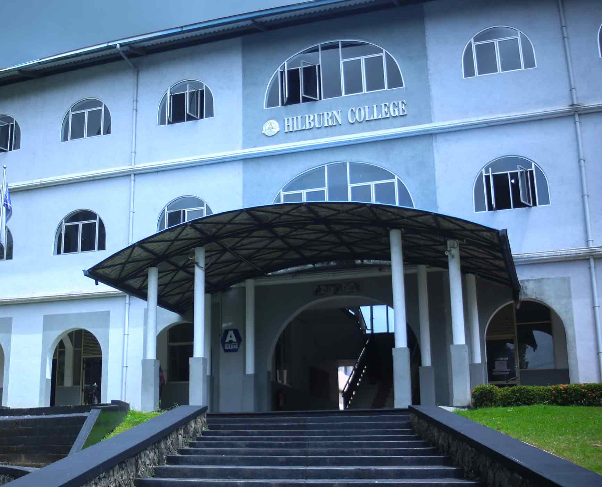
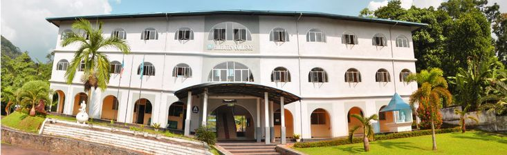
After spending exactly 1 year at Hilburn, I started my schooling journey at a new school,
this was indeed a new chapter which was opened in my life and this
was one of my dreams in which I had since I was small. Finally, I got the opportunity
to study at my dream school, which was the Lyceum International School, Ratnapura. This was indeed a turning point of my entire
school life because this was one of the leading international schools which had the Cambridge Syllabus. In that school I learnt from
pre-grade to grade 10 until I finished my Cambridge Ordinary Level Examinations.
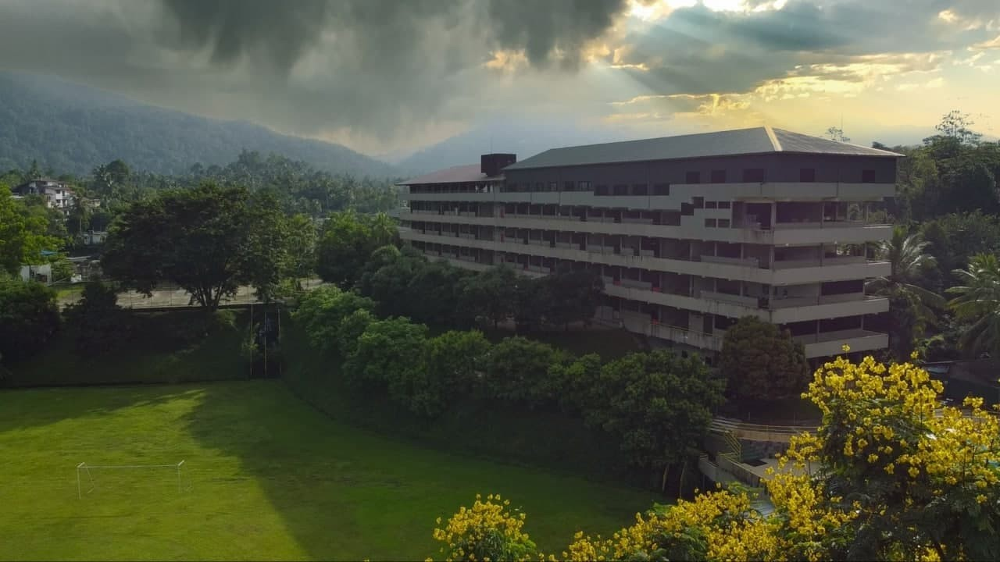
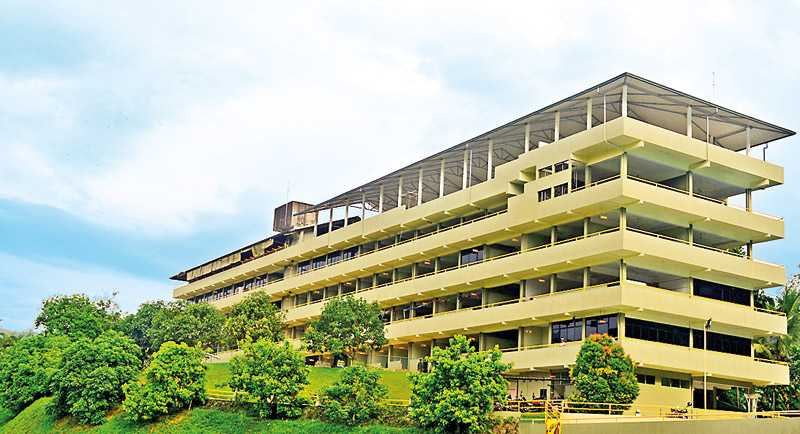
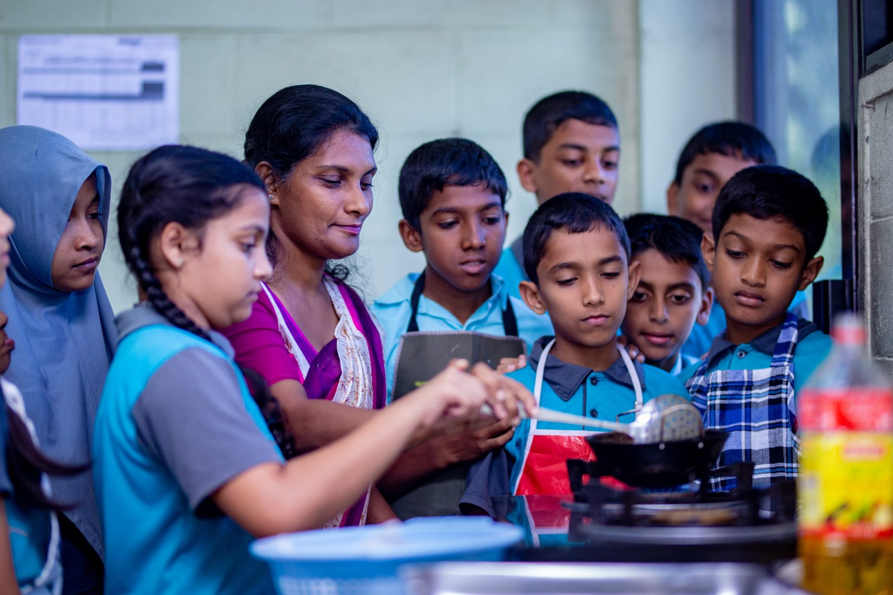
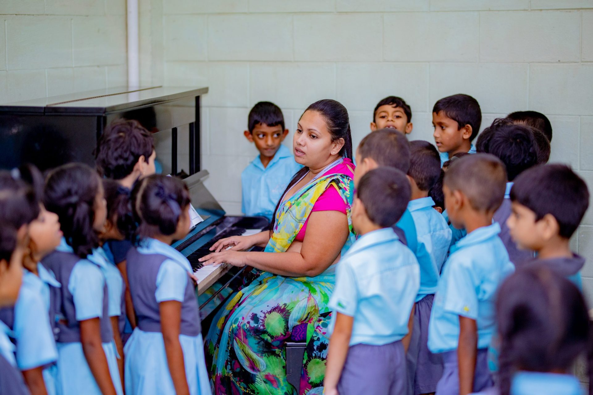
While I was searching a place to continue my higher studies, one day I got to know about
The NSBM Green University Town through one of my cousin brothers, and I was so interested
in it that I made a desicion to stop doing my Advanced Levels and I so badly wanted to start a foundation
program at The NSBM Green University Town, so I qucikly joined to one of their intakes and now I am currently
in my second semester of my foundation program. Willing to be a graduate as a
computer security engineer at The Plymouth University, UK.
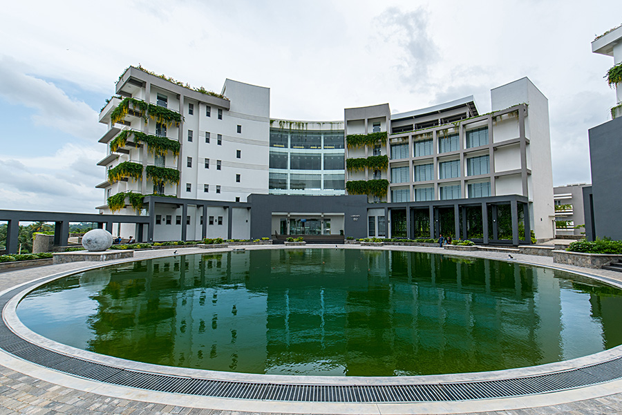
 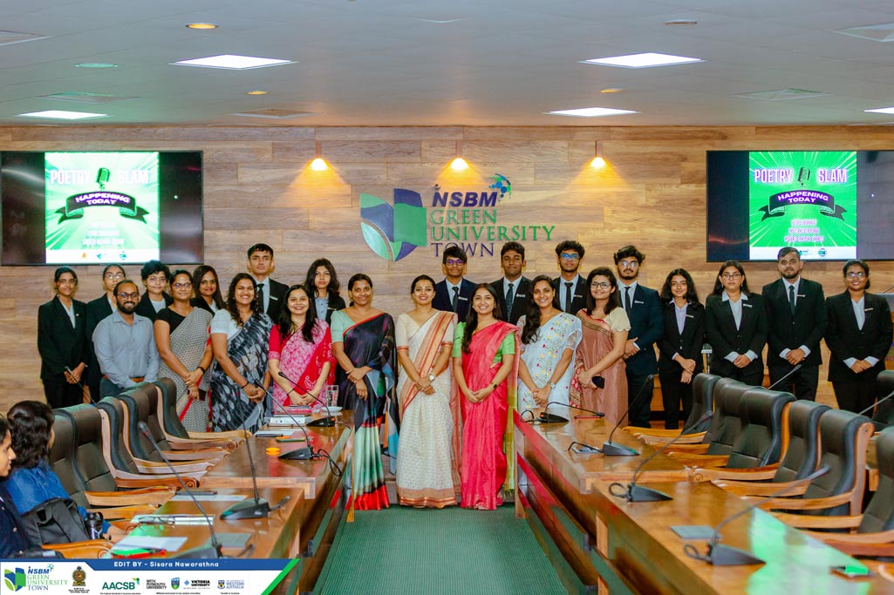
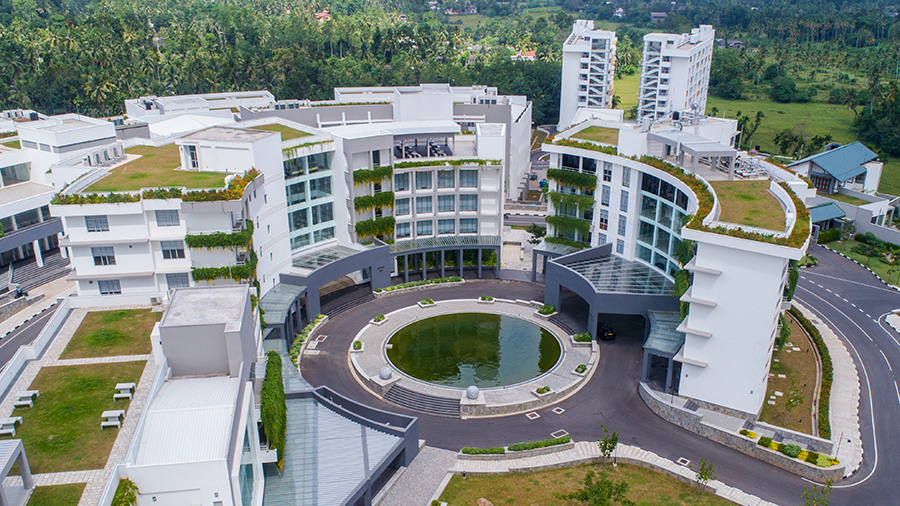
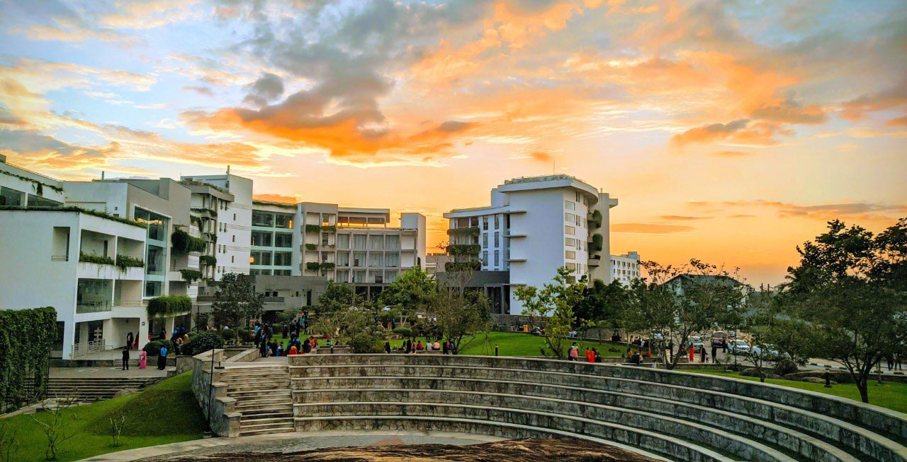
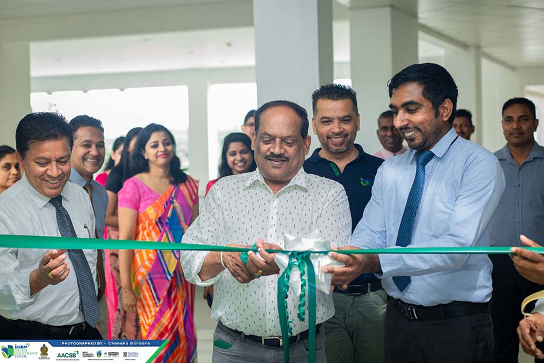
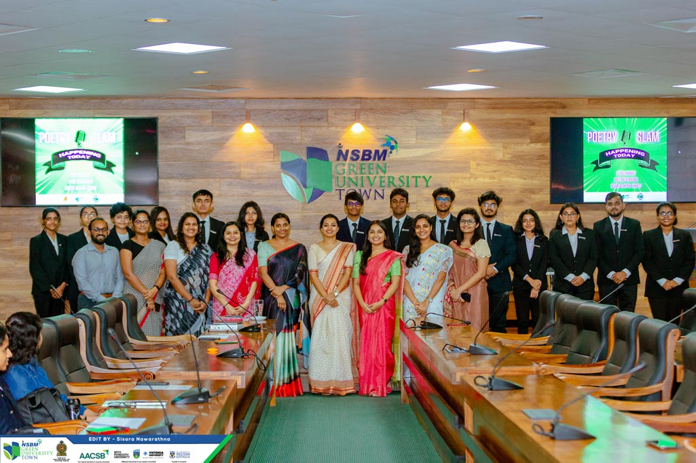
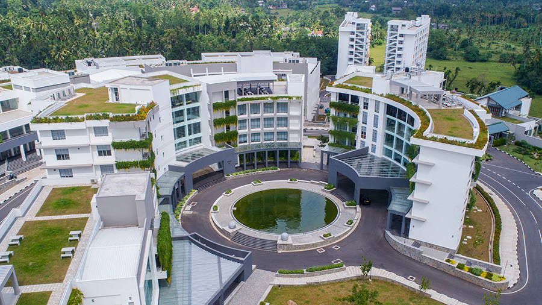
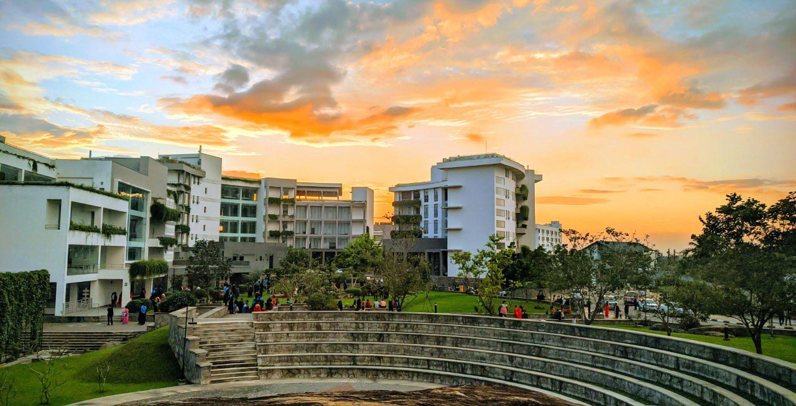
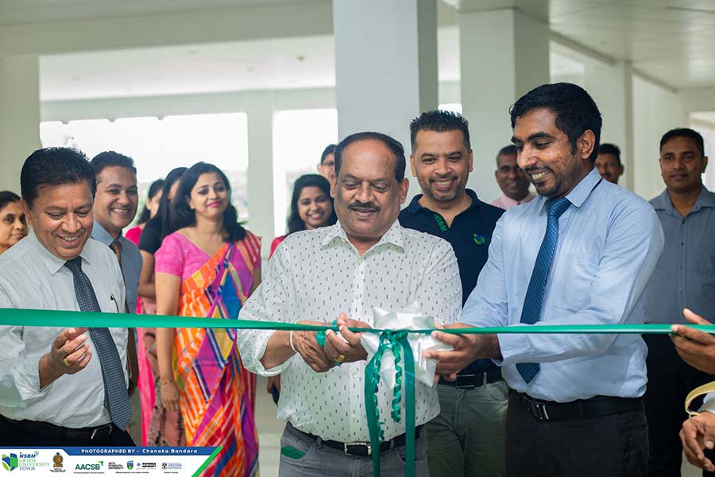